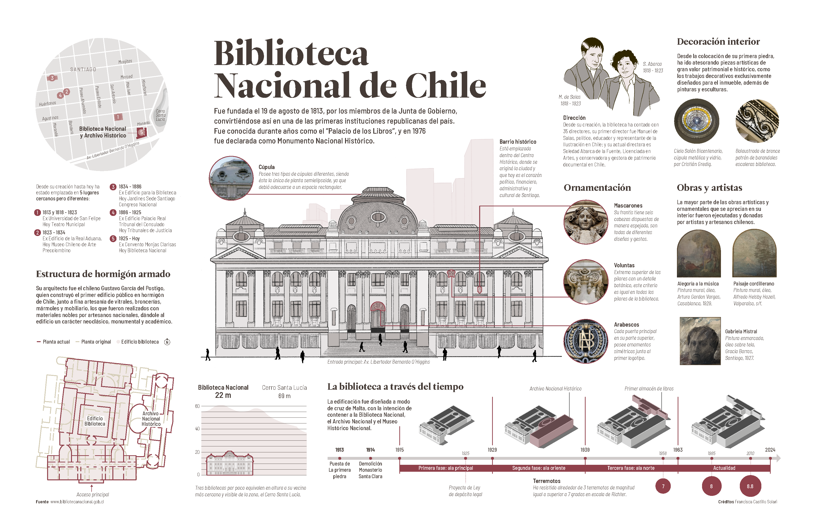

La Biblioteca Nacional de Chile es un edifiio ubicado en Santiago de Chile, específicamente en pleno Centro Histórico, en la Avenida Libertador Bernardo O'Higgins. Fue fundada el 19 de agosto de 1813, por miembros de la Junta de Gobierno, convirtiéndose así en una de las primeras instituciones republicanas del país. Fue conocida durante muchos años como el “Palacio de los Libros”, y en 1976 fue declarada como Monumento Nacional Histórico.
Lo avanzado
Inicié este diplomado en julio del 2024. Mi experiencia previa con la infografía se resume actualmente a la creación de contenido informativo para redes sociales, pero durante mi Proyecto de Título creé una página informativa de carácter infográfico.
Con lo aprendido y avanzado hasta octubre del 2024 en el diplomado, he podido formular e implementar una infografía como la que sigue:

También he podido narrar una historia sobre el mismo tema abordado en la infografía impresa con el uso de la publicación de carrusel en Instagram.
El desafío que ahora sigue es aprender a desplegar gráficas de distintos tipos en una infografía digital a implementar en la WWW.
El SVG
El SVG se parece al HTML, son de la misma familia "ML". Mientras el HTML es un lenguaje que marca el hipertexto para describirlo, el SVG es un dialecto que marca la gráfica escalable para describirla (SVG es sigla de Scalable Vector Graphics).
El SVG puede ser incrustado en un HTML tal como el CSS o el JavaScript, entre etiquetas que lo anuncien:
También puede tratarse como un documento de extensión SVG, que puede ser incluido en el HTML como un objeto (<object></object>) de un tipo determinado:
También puede ser incluido como si se tratara de una imagen rasterizada (img), a la que se va a buscar como recurso (src). El problema es que al tratarla de tal forma ya no hay ninguna descripción de gráfica que se pueda aprovechar:
Las descripciones perdidas son también textos perdidos: ¡Ya no son seleccionables ni legibles para un buscador! Tal como los textos en las imágenes y videos para el carrusel en Instagram.
Debido a tal pérdida es importante tomar la decisión respecto del uso y modo de incluir el SVG en una infografía digital. Conviene que el uso como mera referencia visual se deje a las imágenes rasterizadas, tal como la que está al final de esta página (que es puesta allí como un fondo desde el CSS).
A propósito de poner allí una rasterizada, SVG también nos entrega la posibilidad colocar dentro suyo un JPG, PNG o WebP, lo que nos permite trabajar de mejor manera con los pesos de los archivos: ¡No tenemos que trazar con varita mágica la imagen rasterizada para luego sumar textos, líneas y otros elementos gráficos vectorizados sobre ella! Basta con incrustarla.